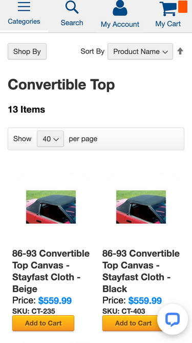
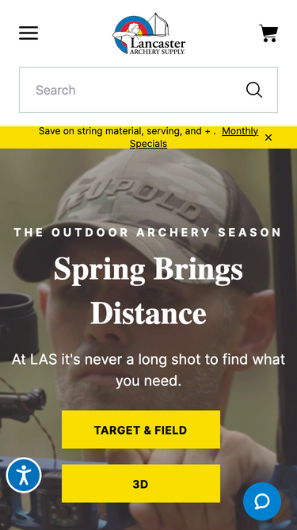

Visual Hierarchy
Aircraft Owners and Pilots Association
aopa.orgIf one were to stumble across this site, there would be no doubt that it has something to do with aircraft. This site has always placed some kind of aircraft picture as a hero banner. The sweepstakes plane is shown prominately. For my eyes, at least, it is an easy flow from one section to the next of the page.
Hick's Law
Zip Corvettes
Zip Corvette - Convertible Tops
This page has good filtering. As you move over each item, they have used a button that stands out and draws the eye to it.
White Space and Clean Design
Lancaster Archery
Lancaster Archery-Home
This page is easy on the eyes and doesn't seem crowded. There is a lot of information on this page, but it is nicely spaced.